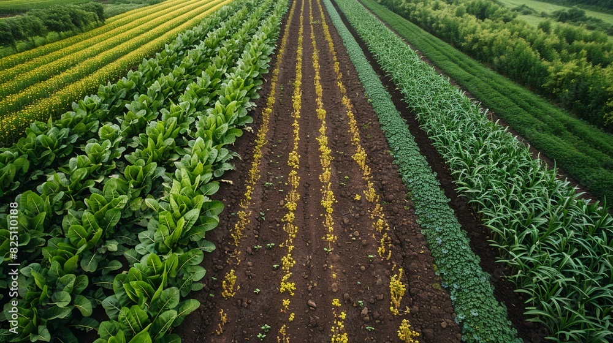

Step into the future of agriculture, where cutting-edge technology meets sustainability. Our AI-powered drone systems seamlessly integrate with satellite data to deliver real-time, farm-level insights that empower farmers to optimize water usage, monitor crop health, and enhance productivity. From seeding to harvest, every drop counts, ensuring that water resources are efficiently managed, even in the most challenging conditions.
Precision Agriculture with Drone Technology
Utilize our drone systems for unparalleled crop monitoring. From detecting early signs of disease to assessing growth stages, our technology provides farmers with vital insights, enabling timely interventions and maximizing crop health.
Experience the future of farming with our AI-driven platform. By combining historical data with satellite imagery and real-time drone inputs, our system continuously learns and adapts, offering precise predictions for crop management, water usage, and yield optimization.
Our drone technology goes beyond traditional farming practices. Designed with the farmer in mind, our drones provide precise, field-level data that helps in making informed decisions. Whether it's optimizing irrigation or detecting crop stress early, our drones offer a reliable and efficient solution that boosts productivity and reduces labor, ensuring farmers get the most out of every acre.
Stay updated! Enter your email address below: